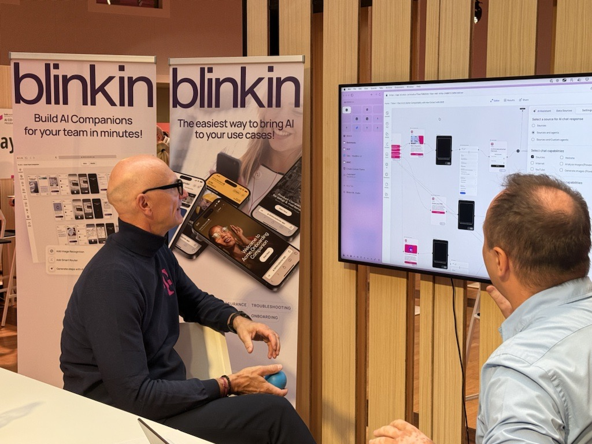

ÜBER BLINKIN
Damit KI da ankommt, wo ihr arbeitet.
Blinkin verbindet euer Wissen, eure Business-Logik und passende KI zu Anwendungen, die im Alltag funktionieren.
Gespräch buchen
Seit 2019 beschäftigt uns dieselbe Frage: Wie kommt neue Technologie näher an die Menschen, die Produkte, Prozesse und reale Probleme am besten kennen? Früher mit AR und Computer Vision, heute mit Agenten und KI-Workflows.
Für uns endet KI nicht am Desktop. Sie soll dort helfen, wo Arbeit passiert: im Büro, in der Produktion, im Service oder beim Kunden. Deshalb bauen wir teilbare Anwendungen, die antworten, sehen, hören und nächste Schritte anleiten können.
Gemeinsam mit euren Fachbereichen entstehen Lösungen, die schnell gebaut, getestet und weiterentwickelt werden können. Nah an der tatsächlichen Arbeit.
MIT STARKEN MARKEN ZUSAMMENGEARBEITET
KI-Lösungen für reale Prozesse, Produkte und Services.


EUROPÄISCH GEFÖRDERTE TECHNOLOGIE
Souveräne KI für den Mittelstand.
Unternehmen brauchen die Freiheit, Modelle und Provider passend zum jeweiligen Anwendungsfall zu wählen – ohne bei Daten, Governance und Verantwortung kritische Kompromisse zu machen.
Blinkin arbeitet daran als Deeptech-Unternehmen – mit eigener Forschung und Entwicklung. Der European Innovation Council unterstützt Blinkin mit 2,5 Mio. €, um genau dafür die technische Basis weiterzuentwickeln: nachvollziehbare KI-Assistenz, zukunftsfähige LLM-Setups, menschliche Kontrolle in den Workflows und KI-Anwendungen, die sich sicher in anspruchsvolle Arbeitsabläufe integrieren lassen.

WAS BLINKIN EINBRINGT
Wir bringen KI vom ersten Versuch in die tägliche Arbeit.
Expertise verfügbar machen: Wissen erreicht die richtige Person im richtigen Moment, statt in Postfächern, Köpfen oder Tabellen zu verschwinden.
Komplexität produktiv machen: Wir verbinden vorhandene Systeme und Daten mit einer klaren Oberfläche, einem Workflow oder einer KI-Anwendung.
Vom Pilot zum Einsatz: Wir bauen nicht für die Demo, sondern für Teams, Regionen und Rollen, die eine Lösung tatsächlich nutzen sollen.
BEREIT, KI KONKRET ZU MACHEN?
Wählt euren ersten Anwendungsfall, der wirklich etwas verändert.
Ob ihr einen Prozess beschleunigen, Expertise zugänglich machen oder ein neues Angebot bauen wollt: Wir zeigen euch den nächsten klaren Schritt und setzen ihn mit euch um.